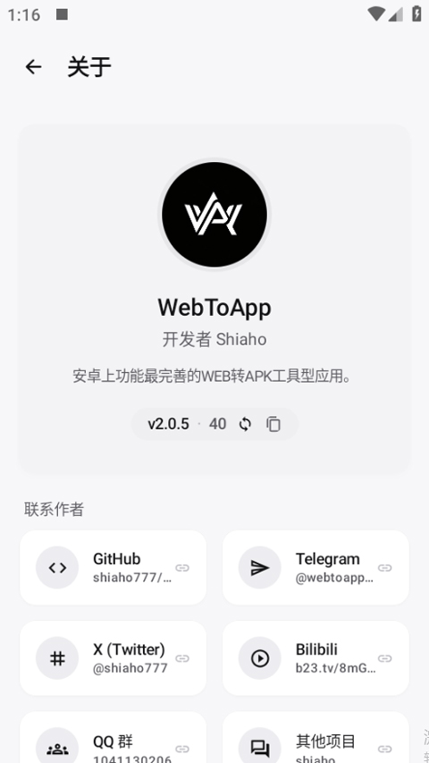
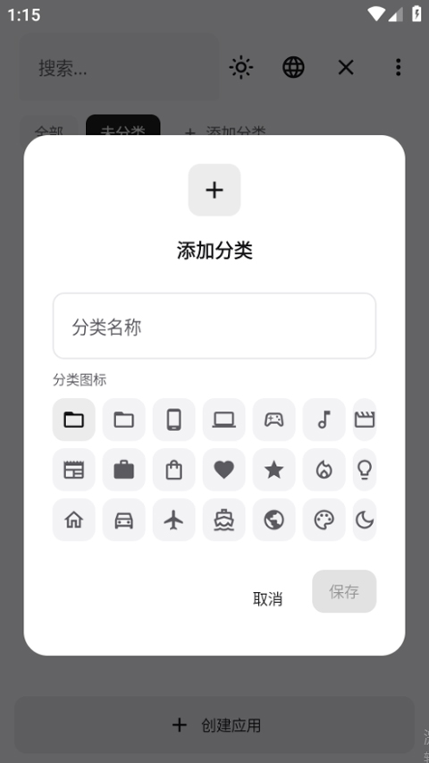

把网页变成 APK 只需要五分钟？WebToApp 新手从零到上手
第一次听说 WebToApp？别急，这篇就是专门写给零基础小白的带路文。从下载安装到打包出第一个 APK，跟着走一遍你就明白这个工具到底能帮你做什么。
这篇能带你从完全不懂到用起来——不需要任何编程基础，甚至不需要你写过一行 HTML。
它到底是干嘛的？一个生活化类比
想象一下：你平时在手机浏览器里打开一个网页，想把它变成一个可以放在桌面上的 App 图标，点开直接进、有独立窗口、还能离线用。WebToApp 就是帮你干这件事的——但它做的远不止"网页加个壳"那么简单。
打个比方：如果说浏览器是你家的大客厅，随便进来随便逛；那 WebToApp 就像帮你把客厅里你最喜欢的那个角落隔出来，装上门、贴好墙纸、配上专属家具，变成一个只属于你的独立小房间。这个"小房间"有自己的名字、自己的图标、自己的权限控制，甚至可以加锁、加广告拦截、加别人没有的小功能。
WebToApp官网可以拿到这个工具，下载安装到手机上就能直接用。

五分钟上手：从下载到第一个 APK 跑通
好，现在你的手机上应该已经装好了 WebToApp（还没装的话去下载）。跟着下面的步骤走，五分钟之内你就能打包出属于自己的第一个 APK。
第一步：创建你的第一个应用
打开 WebToApp，首页会有一个"新建应用"之类的入口。进去之后你需要填两样东西：应用名称（随便起，比如"我的测试应用"）和目标网址（你想变成 App 的那个网页地址）。
填完保存，你就有了一个应用的雏形——就像盖房子打好了地基。
第二步：配置一下隐私设置
这一步非常重要，别跳过。找到"隐私"或者"隐私与加固"卡片，打开它。你会看到几个开关：
- Hosts 去广告：打开它，选上推荐的几个过滤列表。这样你的 App 里网页上的广告就会被拦掉——而且这些规则会被编译进 APK，不需要 App 运行时联网拉取，零延迟、零额外流量。
- 指纹伪装：默认就开着。这个功能覆盖了 50 多个维度——浏览器标识、屏幕尺寸、语言、时区、TLS 加密套件排序全都在里面。它的作用是让目标网站把你的 App 当成一个正常的浏览器会话来识别，不会发现你是"套壳"的。
配置完点保存就行。
第三步：打包导出 APK
找到"构建"或者"打包"按钮，点一下。WebToApp 会弹出一个对话框让你选签名证书——如果你是第一次用，选"自动生成"就好。等进度条走完，APK 文件就会出现在你的手机存储里了。
第四步：安装你的第一个 APK
打开文件管理器，找到刚导出的 APK，点击安装。如果 Android 弹出"未知来源应用被禁止"，别担心——这不是 WebToApp 的问题，是 Android 8.0 之后的安全机制。
解决方法很简单：打开系统设置 → 应用 → 找到你用来打开 APK 的那个 App（可能是文件管理器、浏览器或者网盘 App）→ 点开"安装未知应用"的开关。给下载来源授权一次就够了。
装完之后，桌面上会出现你刚才给应用起的名字的图标——点一下，走通了。
上手后先玩这三个功能
第一个 APK 跑通了，恭喜！接下来三个功能最值得你先碰，它们能让你的 App 从"能用"变成"好用"。
功能一：指纹伪装深度调整
回到隐私卡片，你会看到指纹伪装下面有一堆可选项：User-Agent 选 Android / Chrome / Firefox / Safari 各种版本，屏幕尺寸和设备内存也能自定义。
你会发现什么？不同的目标网站对不同 UA 的响应可能不一样——有些网站给 Chrome 访客的内容比给 Safari 的更全，有些给手机端 UA 会返回移动版布局。这意味着你可以根据目标网站的特点，选一个最合适的"身份"来伪装。
功能二：在 App 里装 MV3 Chrome 扩展
WebToApp 有个模块市场，里面能直接搜索和安装原版的 MV3 Chrome 扩展——不是移植版，是 Chrome 商店里的原版扩展包。
这意味着什么？你可以给自己的 App 装上广告拦截、脚本注入、页面美化这些扩展，完全不需要自己写代码。内容脚本类的扩展几乎直接能用，装完之后目标网页加载时扩展就会自动注入脚本。哪些扩展有坑、哪些效果最好，WebToApp文档里有更详细的兼容性说明。
功能三：签名证书备份
回到构建设置，找到签名证书的管理入口。把当前用的证书导出备份到一个安全的位置（比如云盘）。
这为什么重要？因为 Android 要求覆盖安装的 APK 必须用同一个证书签名。如果你以后想给 App 推更新，但签名证书丢了，那就只能先卸载旧版再装新版——用户的数据可就全没了。证书备份一次，终身受益。

小白的三个常见疑问
疑问一：覆盖安装时提示"签名不匹配"怎么办？
最常见的原因是你第一次打包用了一个证书，第二次换了另一个。解决方法有两个：
- 如果证书还在，换回原来那个重新打包就行
- 如果证书丢了，先卸载旧版再装新版——但旧版的数据会丢失，所以一定要备份证书啊！
另外还有一种小概率情况：你选了 V3 签名（Android 9.0+ 引入），但你的设备是 Android 7 或 8。这时把签名设置里的 V3 关掉，只用 V1 + V2 就好。
疑问二：APK 体积好几百 MB，能不能小一点？
体积大的原因通常有三种：内嵌了大型服务运行时（比如 Node.js 原生包就有 30-50MB）、依赖了很多原生扩展、或者离线包抓了太多图片视频。
优化方向也很明确：离线包里的图片先压缩一遍再打包；服务端运行时只放必要的依赖，别把 devDependencies 也塞进去；如果不是必须离线，改成网页型加远程资源的方式，APK 体积会非常小。
疑问三：后台运行的服务切走就停了？
这是 Android 的后台限制（Doze 模式），不是你的 App 有问题。三层解决：
- 在 WebToApp 的通用配置里打开"前台服务"
- 系统设置里把你的 APK 加到电池优化白名单（选"不限制"）
- 国产系统（MIUI、EMUI、ColorOS）还要额外打开自启动权限
三层都做完，后台服务就稳了。
写在最后
好了，从零到跑通，从基础配置到个性化调整——这篇带路文走完一遍，你应该已经能熟练地把任何网页变成一个像样的 APK 了。
别着急，进阶的路还长：WebToApp 内置了一个 Termux 风格的 Linux 环境，包里有 apt 包管理器、gcc/clang 编译器、Node.js/Python/PHP 解释器，能在手机上直接装依赖、编译原生模块、甚至测试服务端代码——这些都在进阶玩法的范围内，等你把基础操作玩熟了再去探索也不迟。整套参考资料我在 GitHub、Gitee、GitCode 三个平台各同步了一份，按需取用就好。